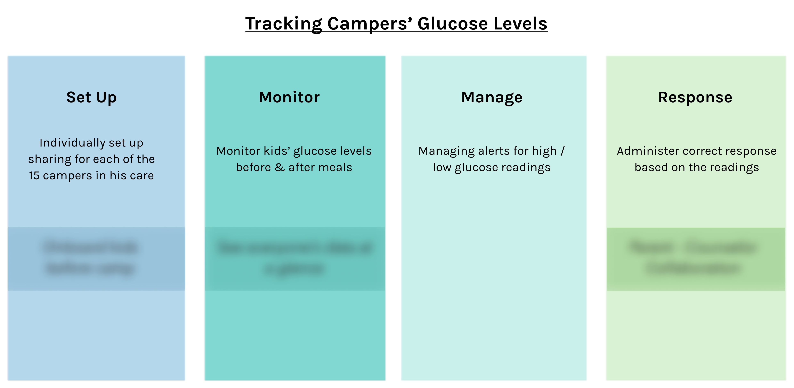

Introduced a new feature in the Dexcom Follow app to improve care coordination at a diabetes summer camp between parents & counselors.
My Responsibilites: Conducted secondary research & user interviews, iterated on low to high-fidelity prototypes & conducted usability tests.
Duration: Jan - Mar 2020 (8 weeks)
Role: UX Designer & Researcher
Tools: Figma
Note: My work is under NDA. If you are interested in learning more, please feel free to contact me! I would be happy to share my experiences & takeaways at a high level.
Dexcom is a company that produces continuous glucose monitoring (CGM) systems to help those with diabetes track and manage their glucose levels.
In Winter 2020, I had the opportunity to work with Dexcom and the UCSD Design Lab, taking part in the Diabetes Design Initiative (DDI). We met once a week for 4 hour work sessions. We were mentored by those at the head of the Design Lab and were occassionally joined by Dexcom employees.
We worked in groups, with each team tackling a different aspect of users managing their blood glucose levels using Dexcom, such as in the setting of travelling or starting college. My team was in assigned the topic of remote monitoring blood glucose levels in the setting of a children's diabetes camp.
I worked alongside my team of 4 on researching, ideating, and designing solutions to improve the experience for camp counselors and parents who use the Dexcom Follow app.
The Dexcom Follow app connects people with diabetes to their loved ones. It allows their Followers to view and monitor their blood glucose levels, trends, and data. The most common users are parents and children, where the child is the CGM user and their parent is their Follower.
At diabetes camps, camp counselors are also following the children and can see their CGM data. Since the counselors are the ones who are in close vicinity to the children while at camp, they are the ones who take care of the children when the app alerts them with a low or high glucose reading.
However, parents who are monitoring their children at home will still receive the alerts from the Follow app. They worry about if their children are being taken care of and if the camp counselors have addressed the alerts.
We wanted to explore the topic of care coordination and how we might reassure parents and other caretakers who are following their child that the counselors have given the proper treatment in accordance to the low and high readings.
We conducted interviews with volunteers from a San Diego based ADA diabetes camp, Camp Wana Kura. This included camp counselors, medical staff, and a director of the camp. We also conducted secondary research through the Dexcom CGM Facebook Group and read reviews for Follow app.
"Kids were finally allowed to carry their own CGMs last year, but I feel like the camp isn't embracing technology. Parents also aren't 100% comfortable with not knowing what's going on behind the low and high alerts."
We created an activity map in the point of view of a camp counselor for a diabetes day camp supervising 15 children with CGMs. It breaks down how the counselor would currently track campers' glucose levels into 4 different stages.
We identified 3 opportunities, highlighted in boxes on the activity map, that we could potentially implement.
After presenting our current research to Dexcom and consulting with them, we decided to focus on improving the communication and collaboration between parents and camp counselors.
within the Dexcom ecosystem, easing worries & concerns from Followers not in close vicinity of the Sharer.
to CGM use in children's diabetes camps & embrace the use of technology.
to use the Dexcom Follow app for a seamless user experience.
After narrowing down our focus, we each created sketches to see how we could include our idea in the existing user interface on the Dexcom Follow app. We compiled all the best ideas into a single paper prototype and conducted user testing with participants with Type 1 diabetes or were familiar with CGMs.
After we received feedback on the main features and the user flow of the app, we created low-fidelity iteractive wireframes using Figma. We conducted another round of user testing and received valuable feedback on more detailed aspects of the app.


*Photos blurred for confidentiality
We then worked on creating a high-fidelity prototype on Figma, incorporating all details and addressing the feedback we received. We kept iterating and refining our prototype after conducting further user testing. At the end of our 8 week design sprint, we worked on a pitch, a poster showing our important points, and presented to stakeholders at Dexcom, where we gained approval for our ideas and design.
"Would be very useful in the setting of a diabetes summer camp!"
Although I cannot disclose the final design for the user interface due to NDA, I am really happy with how it turned out and we received a positive response from Dexcom stakeholders at our final presentation. This was my first time working with industry; it was a really great experience and I've learned a lot! There was a lot of consulting with Dexcom and with our mentors at the Design Lab. It was really helpful to get their feedback at each stage so we could narrow down our broad topic of Remote Monitoring.
I learned that just designing a new user interface wasn't enough. It's really important for us to be able to support our ideas with the research we've conducted and explain how our ideas would be useful. One thing I would do differently would be to practice version control and keep every iteration of our design, instead of accidentally overriding it with new changes. It's important to be able to see how the design has changed with every new iteration after each user test.